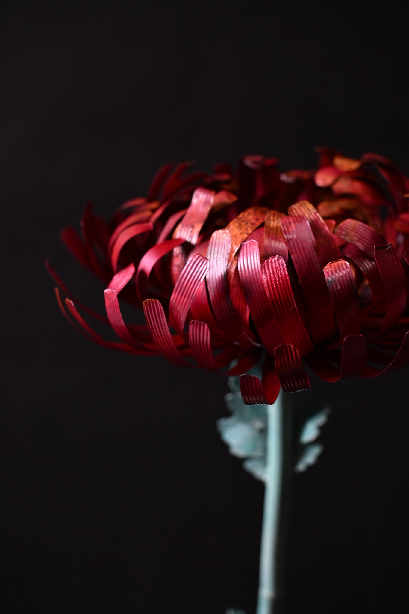

KOGEI REALISM
存在の条件を、
金属に留める。
Kaito Kawasaki — Metal-Casting Artist
01
コンセプト
身近に潜む小さな生命の一瞬を見つめ、
移ろい続ける自然の記憶を、金属の中に留める。 Preserving fleeting life in metal.
- I
工芸とは、人間を含めた生態系を表現する営みである。
- II
素材・環境・身体・知覚の関係のなかで、何かが現に立ち上がる。その「現れ」をつくる。
- III
それは技巧による写実ではない。存在の条件そのものを組み直す態度である。
02
代表作品


03
河﨑海斗

金工作家鋳金KOGEI REALISM
河﨑海斗は、生命を模倣する作家ではない。生命が立ち上がる場を、工芸によってつくる作家である。
2000年、広島県呉市生まれ。金工作家（鋳金）。2026年、東京藝術大学大学院美術研究科工芸専攻鋳金研究分野 修士課程修了。東京を拠点に制作する。
鋳造した金魚をアクリル樹脂の内部に置く。樹脂は付加された素材でも、保護のための外殻でもない。それは環境として機能する——すなわち、水のもうひとつの形態である。磨き、加熱、酸素、温度。それらの条件を精密に調整することで、色は生成される。